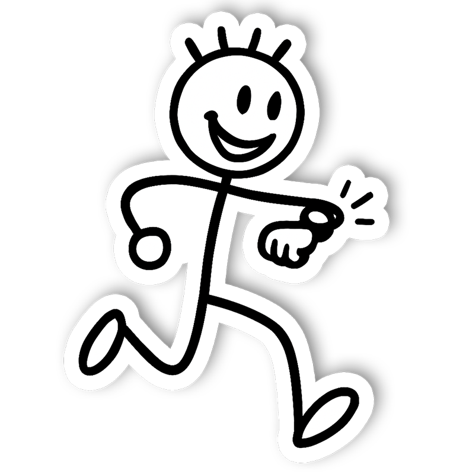
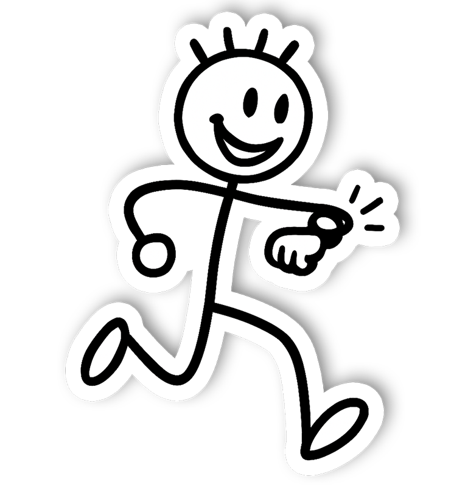

Case Study
ZONE
A concept that simplifies fitness tracking across phone and watch surfaces. I explored what happens when clarity, wearable data, and motivation collide.
 

01 — Overview
ZONE explores how technology can support athletes, gym-goers, and everyday users in improving their fitness performance.
Through primary interviews, competitor analysis, and multiple design explorations, I developed a wearable-first fitness app that prioritises clarity, usability, and real-time insights. This project was created as part of my Unit 4 design module, following a full UX process from research to final UI.
02 — The Problem
Modern fitness apps often overwhelm users with features, inconsistent navigation models, and unclear metrics. My research surfaced three recurring issues:
- Users struggle to understand what their data actually means.
- Fitness tracking feels overcomplicated and spread across multiple apps.
- Motivation drops when progress isn’t visual, simple, or personal.
ZONE offers a cleaner, smarter, wearable-friendly way to track performance.
Interviews with beginner, intermediate, and advanced users reinforced this: everyone craved quick access to core stats, felt overwhelmed by long menus, and trusted apps that remained minimal and consistent.
03 — Research
Competitor Analysis
Studied Apple Health, Samsung Health, and Whoop:
- Apple Health excels at data visualisation, but lacks personal touches.
- Whoop informs performance readiness, inspiring deeper metrics.
- Samsung Health integrates social competition — motivating but busy.
ZONE takes inspiration while simplifying everything to avoid cognitive overload.
04 — Defining the User
Persona
A single persona emerged: active users who want simple, reliable, visually clear tracking.
Needs
- Quick, clear stats
- Smart summaries
- Occasional challenges
- Wearable integration
- Minimal steps to reach goals
Frustrations
- Confusing menus
- Data overload
- Unclear progress indicators
05 — User Journey
The current journey across fitness apps: Open app → Tap menus → Search for stats → Interpret confusing data → Lose motivation.
The redesigned ZONE journey: Open app → Instant overview → Deeper stats if needed → Optional challenges.
06 — Early Exploration
Paper sketches and low-fidelity wireframes defined the dashboard, watch app, personal page, and challenges hub.
07 — Branding & Visual Identity
Brand direction was influenced by energy, movement, simplicity, and “zone in” focus. Final identity uses a bold Z-shape with angled cuts representing speed and progression.
 Logo exploration and final mark.
Logo exploration and final mark.
08 — High-Fidelity Design
Home Dashboard
Four core metrics in consistent cards for quick scanning.
Personal Page
Daily summary, weekly view, recent workouts, achievements.
Challenges Section
Simple goals and visual reward loops to encourage consistency.
Watch App
Micro-interactions for quick glances, workout controls, and heart-rate checks.
09 — Usability Testing
Quick think-aloud sessions revealed what worked and what needed refinement.
What worked
- Visual clarity
- Navigation structure
- Circle performance UI
- Watch + phone alignment
Needs improvement
- More distinction between data categories
- Stronger hierarchy on the personal page
- Clearer feedback on challenge completion
10 — Outcome
ZONE combines simple navigation, clear data representation, wearable integration, and motivational features without clutter. Testers called the experience “clean,” “easy to follow,” and “motivating at a glance.”
 Outcome screens showcasing key moments.
Outcome screens showcasing key moments.
11 — Conclusion
ZONE demonstrates the impact of a structured, research-driven approach to fitness experience design.
Strengthened skills: UX research, interaction design, branding, mobile & wearable UI, visual clarity, user-centred iteration.
Want the full walkthrough?
Let’s set up a session. I’ll bring the prototypes and the stickman will bring snacks.